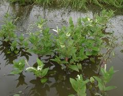

三白草
學名：pathium chinense Lour.
科名：三白草科
別名：水檳榔、水荖仔、水荖葉、水荖、水木通、三白根、三點白
原產地：中國、韓國、日本、琉球、菲律賓、中南半島
特徵：
多年生草本植物，地下莖匍匐狀，單葉互生，紙質，有葉柄，基部與托葉合生為葉鞘，抱莖，葉片為卵形或卵狀橢圓形，基部心形，總狀花序，花小密生，無花瓣，將靠近花序的葉子變成白色，替代花瓣的效果，花期在4至7月。
用途：
分布於平地至低海拔山區，生長在池澤、水田、溝渠等各類濕地的水生植物。